Livia Ornithopter Wing Kinematics (2025)
Created: 31.3.2025
I'll let this project be introduced by the 1-page abstract that I prepared for the Soft Aerial Robotics Workshop 2025, which regrettably didn't take place. This is obviously still early-stage research, and a lot more is still to come. Since the Livia project is self-ideated, self-funded, and currently executed by only myself, I'm always on the lookout for funding/collaboration opportunities, from e.g. experimental biologists or aerodynamicists.

Complementary Photos
Bones of the actual pigeon used to record RoM measurements with mocap markers still attached:
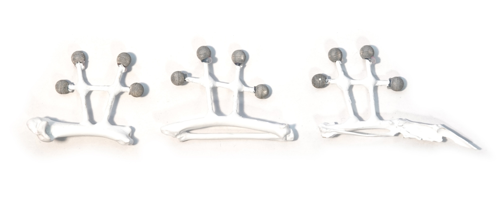
3D-printed bones of extended wing, created by 3d-scanning the actual pigeon bones:
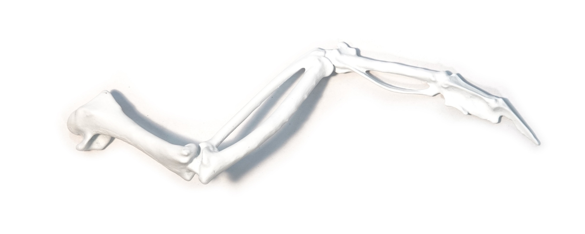
Wing model with 1 DoF in elbow and wrist, aligned to the principal component of their RoM.
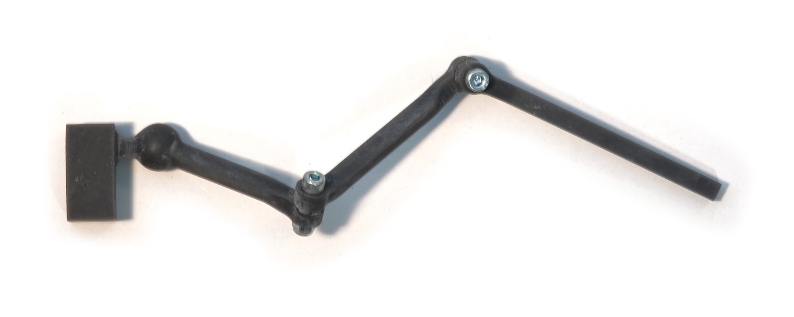
Iterations of a joint with RoM matching pigeon measurements:
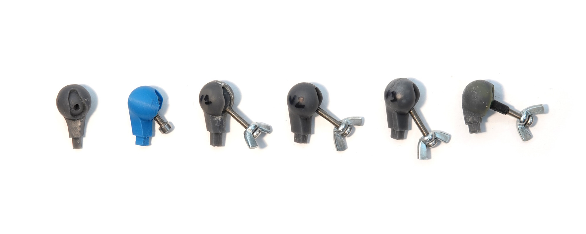
Iterations of wings with RoM matching pigeon measurements:
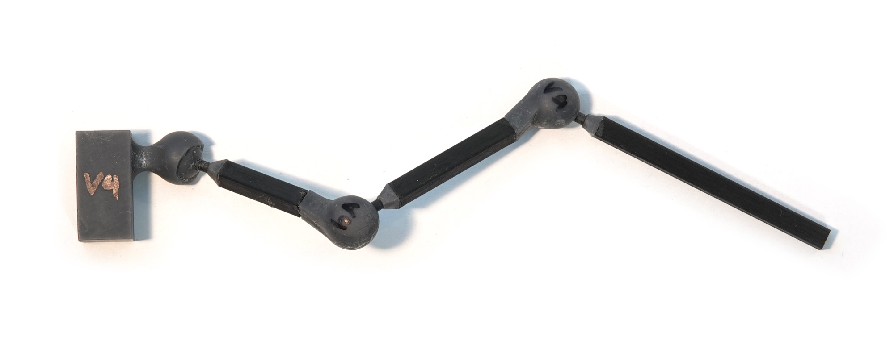
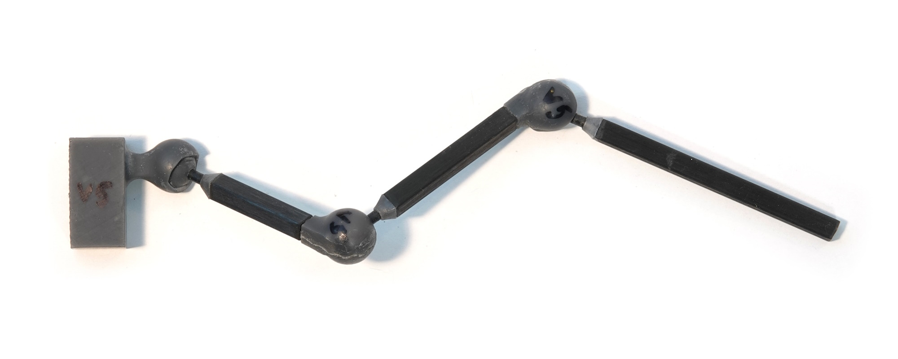
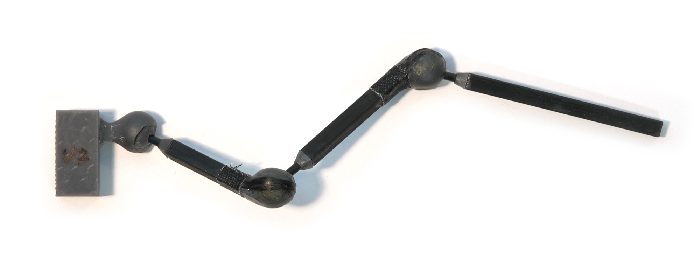
Iterations of wings using materials other than regular SLA resin: FFF PLA & SLA Formlabs Durable
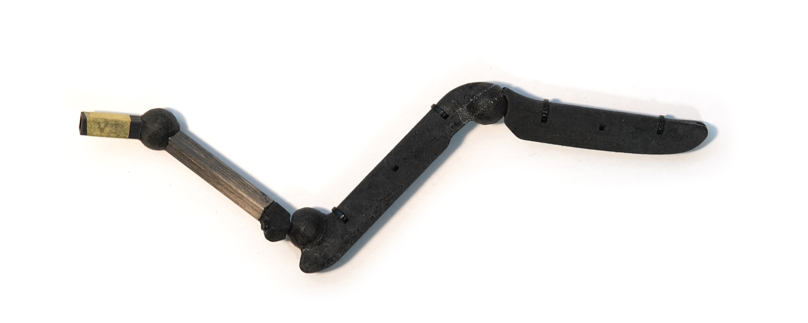
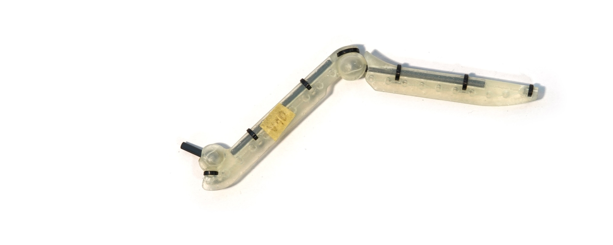
Iterations of wings including carrion crow feathers and tuned rubber bands to spread them:
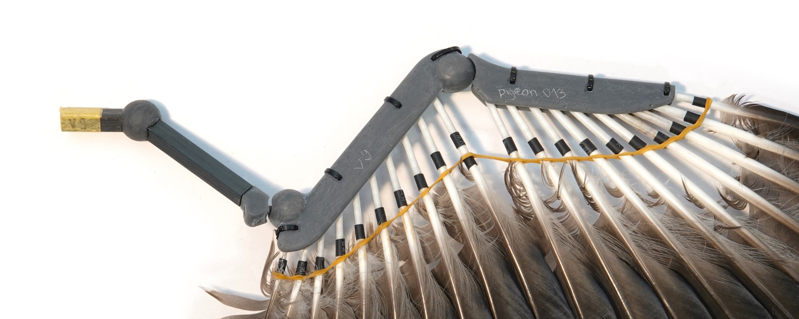
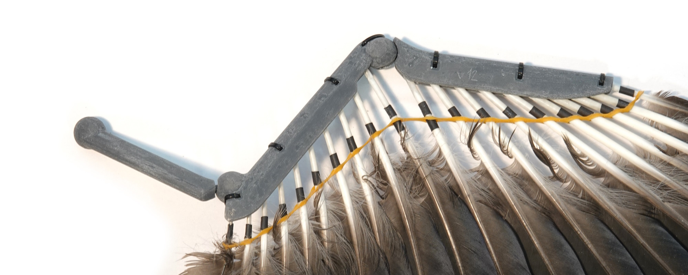
Wing with mocap markers attached, to measure RoM and compare it to the actual pigeon:
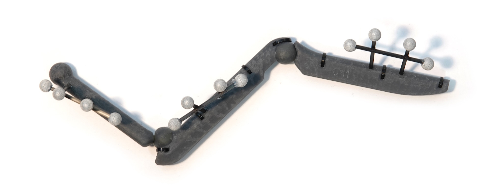